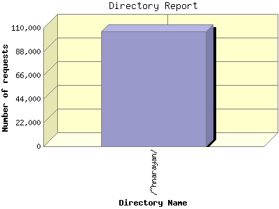

Report generated by Analog 6.0 and Report Magic 2.21
|
Web Server Statistics for "Harish Narayanan (hnarayan) - May 2007" Report generated by Analog 6.0 and Report Magic 2.21 |
The Directory Report analyzes accesses to this web site's directories. This information can be useful in determining the most requested areas.
This report shows all results. This report is sorted by number of requests.

| Directory Name | Number of requests | Percentage of the bytes | |
|---|---|---|---|
| 1. | /~hnarayan/ | 106,752 | 100.00% |
| /~hnarayan/downloads/ | 1,085 | 51.65% | |
| /~hnarayan/downloads/talks/ | 658 | 46.89% | |
| /~hnarayan/downloads/talks/talk11/ | 57 | 15.25% | |
| /~hnarayan/downloads/talks/talk10/ | 48 | 12.70% | |
| /~hnarayan/downloads/talks/talk8/ | 26 | 4.99% | |
| /~hnarayan/downloads/talks/talk12/ | 27 | 3.71% | |
| /~hnarayan/downloads/talks/talk13/ | 49 | 2.85% | |
| /~hnarayan/downloads/talks/talk9/ | 30 | 2.38% | |
| /~hnarayan/downloads/talks/talk2/ | 65 | 1.55% | |
| /~hnarayan/downloads/talks/talk1/ | 55 | 0.87% | |
| /~hnarayan/downloads/talks/talk3/ | 50 | 0.72% | |
| /~hnarayan/downloads/talks/talk4/ | 60 | 0.50% | |
| /~hnarayan/downloads/talks/talk7/ | 63 | 0.50% | |
| /~hnarayan/downloads/talks/talk5/ | 54 | 0.49% | |
| /~hnarayan/downloads/talks/talk6/ | 56 | 0.37% | |
| /~hnarayan/downloads/posters/ | 254 | 3.55% | |
| /~hnarayan/downloads/posters/poster1/ | 147 | 3.55% | |
| /~hnarayan/downloads/papers/ | 87 | 1.08% | |
| /~hnarayan/downloads/info/ | 60 | 0.13% | |
| /~hnarayan/images/ | 44,639 | 28.81% | |
| /~hnarayan/images/photos/ | 14,550 | 11.34% | |
| /~hnarayan/images/photos/thumbnails/ | 10,361 | 1.33% | |
| /~hnarayan/images/photos/portraits/ | 761 | 0.99% | |
| /~hnarayan/images/photos/sos/ | 2,236 | 0.49% | |
| /~hnarayan/images/research/ | 18,770 | 8.57% | |
| /~hnarayan/images/research/movies/ | 171 | 3.23% | |
| /~hnarayan/images/research/highlights/ | 7,132 | 1.43% | |
| /~hnarayan/images/research/highlights-white/ | 29 | 0.00% | |
| /~hnarayan/images/research/highlights-grey/ | 25 | 0.00% | |
| /~hnarayan/images/campus/ | 46 | 7.28% | |
| /~hnarayan/images/pages/ | 980 | 0.76% | |
| /~hnarayan/images/pages/evaluations/ | 200 | 0.23% | |
| /~hnarayan/images/portraits/ | 274 | 0.53% | |
| /~hnarayan/images/icons/ | 9,974 | 0.33% | |
| /~hnarayan/images/icons/grey/ | 3,731 | 0.14% | |
| /~hnarayan/images/icons/darkgrey/ | 3,754 | 0.11% | |
| /~hnarayan/images/icons/lightgrey/ | 2,470 | 0.07% | |
| /~hnarayan/images/icons/small/ | 3 | 0.00% | |
| /~hnarayan/Backup/ | 2,139 | 7.24% | |
| /~hnarayan/Backup/02Second/ | 1,226 | 3.66% | |
| /~hnarayan/Backup/02Second/downloads/ | 265 | 2.99% | |
| /~hnarayan/Backup/02Second/images/ | 486 | 0.44% | |
| /~hnarayan/Backup/02Second/gallery/ | 145 | 0.01% | |
| /~hnarayan/Backup/02Second/psn-article-local Files/ | 1 | 0.00% | |
| /~hnarayan/Backup/03Third/ | 649 | 2.10% | |
| /~hnarayan/Backup/03Third/v6/ | 101 | 1.97% | |
| /~hnarayan/Backup/03Third/v5/ | 82 | 0.04% | |
| /~hnarayan/Backup/03Third/inspiration/ | 90 | 0.02% | |
| /~hnarayan/Backup/03Third/v1/ | 96 | 0.02% | |
| /~hnarayan/Backup/03Third/v2/ | 108 | 0.01% | |
| /~hnarayan/Backup/03Third/v3/ | 86 | 0.01% | |
| /~hnarayan/Backup/03Third/v4/ | 42 | 0.01% | |
| /~hnarayan/Backup/03Third/v7/ | 13 | 0.00% | |
| /~hnarayan/Backup/03Third/tests/ | 12 | 0.00% | |
| /~hnarayan/Backup/Symposium/ | 11 | 1.09% | |
| /~hnarayan/Backup/01First/ | 187 | 0.38% | |
| /~hnarayan/Backup/01First/images/ | 61 | 0.19% | |
| /~hnarayan/Backup/01First/logs/ | 24 | 0.10% | |
| /~hnarayan/Backup/01First/broken/ | 57 | 0.04% | |
| /~hnarayan/Backup/Sitemap/ | 29 | 0.01% | |
| /~hnarayan/Backup/Sitemap/sitemap_gen-1.4/ | 19 | 0.01% | |
| /~hnarayan/Backup/PS_Screens/ | 9 | 0.00% | |
| /~hnarayan/Backup/Was-CGI-data/ | 10 | 0.00% | |
| /~hnarayan/Backup/Older/ | 2 | 0.00% | |
| /~hnarayan/scripts/ | 4,806 | 1.37% | |
| /~hnarayan/layout/ | 30,549 | 0.85% | |
| /~hnarayan/layout/images/ | 25,583 | 0.32% | |
| /~hnarayan/layout/images/cloud/ | 20,185 | 0.12% | |
| /~hnarayan/layout/images/gallery/ | 2,704 | 0.09% | |
| /~hnarayan/advance/ | 7,997 | 0.64% | |
| /~hnarayan/advance/layout/ | 4,971 | 0.12% | |
| /~hnarayan/advance/layout/images/ | 4,365 | 0.02% | |
| /~hnarayan/advance/example-images/ | 2,283 | 0.03% | |
| /~hnarayan/advance/simplicity2.2/ | 181 | 0.02% | |
| /~hnarayan/advance/simplicity2.2/layout/ | 111 | 0.00% | |
| /~hnarayan/advance/simplicity2.2/example-images/ | 55 | 0.00% | |
| /~hnarayan/advance/example_images/ | 15 | 0.00% | |
| /~hnarayan/simplicity-two-point-oh/ | 3,379 | 0.27% | |
| /~hnarayan/simplicity-two-point-oh/layout/ | 2,253 | 0.04% | |
| /~hnarayan/simplicity-two-point-oh/layout/images/ | 1,983 | 0.00% | |
| /~hnarayan/simplicity-two-point-oh/example-images/ | 864 | 0.01% | |
| /~hnarayan/site/ | 225 | 0.20% | |
| /~hnarayan/movies/ | 2 | 0.15% | |
| /~hnarayan/Simplicity_two_point_oh/ | 864 | 0.11% | |
| /~hnarayan/Simplicity_two_point_oh/layout/ | 513 | 0.02% | |
| /~hnarayan/Simplicity_two_point_oh/layout/images/ | 448 | 0.01% | |
| /~hnarayan/Simplicity_two_point_oh/example_images/ | 260 | 0.02% | |
| /~hnarayan/Simplicity_two_point_oh/example-images/ | 10 | 0.00% | |
| /~hnarayan/mirror/ | 162 | 0.08% | |
| /~hnarayan/mirror/usnews_images/ | 104 | 0.01% | |
| /~hnarayan/mirror/psn-article-local Files/ | 10 | 0.00% | |
| /~hnarayan/krishna/ | 59 | 0.08% | |
| /~hnarayan/Simplicity_two_point_oh2/ | 99 | 0.01% | |
| /~hnarayan/Simplicity_two_point_oh2/example_images/ | 30 | 0.00% | |
| /~hnarayan/Simplicity_two_point_oh2/layout/ | 60 | 0.00% | |
| /~hnarayan/Simplicity_two_point_oh2/layout/images/ | 54 | 0.00% | |
| /~hnarayan/simplicity-two-oh/ | 70 | 0.01% | |
| /~hnarayan/simplicity-two-oh/layout/ | 47 | 0.00% | |
| /~hnarayan/simplicity-two-oh/layout/images/ | 42 | 0.00% | |
| /~hnarayan/simplicity-two-oh/example-images/ | 16 | 0.00% | |
| /~hnarayan/tests/ | 3 | 0.00% | |
This report was generated on June 9, 2007 22:56.
Report time frame May 1, 2007 00:01 to May 31, 2007 23:59.
| Web statistics report produced by: | |
 Analog 6.0 Analog 6.0 |  Report Magic 2.21 Report Magic 2.21 |